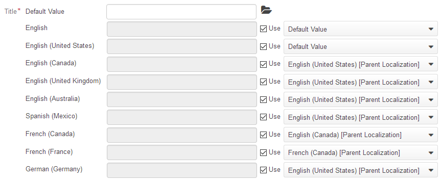

Localization is the process of translating and adapting a product for a specific country or region. OroPlatform allows a user to customize the format of date/time/datetime, numeric and percent values, monetary values as well as the format of names and addresses.
OroCommerce supports localization and provides decent out-of-the-box translation coverage for the most used languages. With out-of-the box integration to CrowdIn service, OroCommerce has live access to the most recent updates from the Oro team and community. See Translating OroCommerce into your Native Language for more information about translation process.
In the System > Localization > Languages, you can add more languages to the system, enable/disable them, import and export translation texts for the language, and install translation updates from the CrowdIn project.
In the System > Localization > Translations, you can view the items available for translation to the enabled and disabled languages in OroCommerce, add and modify translation text for these items, and delete these items if necessary.
In the System > Localization > Localizations, you can create a system where localization inherits a translation from another language when the translation to the main language of the localization is not availabel. This helps to avoid double efforts when translating to similar and related languages and dialects of the same language.
The configured system is used to offer the default translation frame for the in-place content translation.
In the OroCommerce System > Configuration > General > Localization, you can enable default or custom localization for all OroCommerce websites.
For more granular tuning, in the Website configuration, you can select default localization and enable a subset of system localizations to be used on the particular Website.